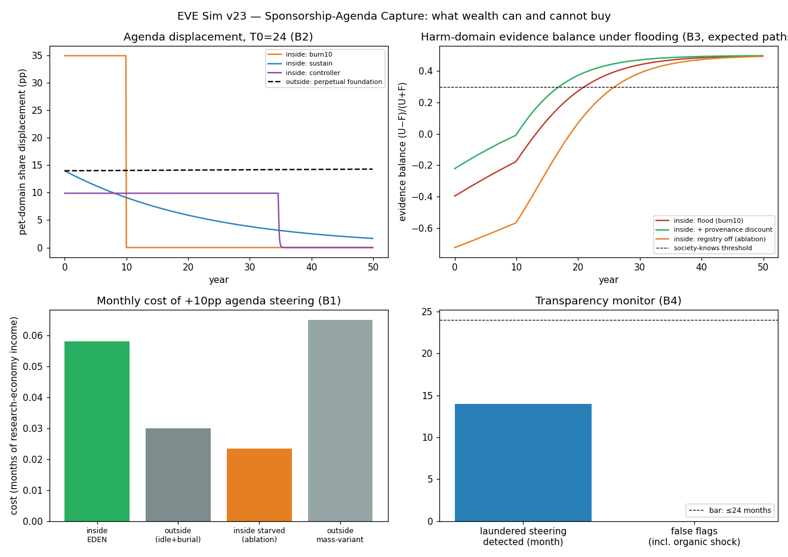
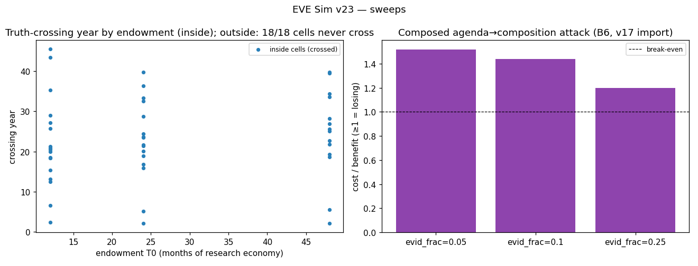

In plain language
Companion to RESULTS - v23.0 Sponsorship-Agenda Capture.md. Same numbers, no jargon.
Why this run exists
v22 gave you a clean answer about wealthy early adopters: their money can't compound, can't buy votes, can't buy reputation, and melts to below-average influence within a generation. But it left one channel untested, and we said so: a rich sponsor can still fund research — and whoever funds research picks the questions, even if the researchers get all the credit and pay. In today's world that channel built the tobacco institutes and the sugar-industry studies: fund only the questions likely to come out your way, bury the ones that don't, and let a compounding endowment do it forever. v23 asks whether EDEN actually closes that playbook, or just claims to. We wrote down the pass/fail lines first, then ran it. Four of seven came back FAIL — and those failures are the useful part, because each one corrects something we believed.
What we expected, and what we got
We expected steering researchers to cost 3× more inside EDEN. It costs about 2×. Inside EDEN, researchers run at full capacity on their own data income, so a sponsor has to outbid a good living rather than rescue an idle lab. That premium is real — but thinner than we registered, and it comes entirely from the researchers' data income (kill that in the model and the premium disappears). Plain consequence: the WTP experiment isn't just about revenue; it's about how expensive EDEN makes corruption.
We expected sponsor influence to fade to nothing within 50 years. Mostly true — but a big, patient fortune can outlast the clock. The deep rule held perfectly: outside, an endowment spending less than its yield steers forever (we ran it — the influence line literally rises across 50 years); inside, with no yield, total influence is strictly metered — about 15 percentage-point-years of agenda tilt per month-of-economy spent, prepaid, and then it's gone. But "finite" isn't "fast": the largest endowment we tested, spent carefully, held a 10-point tilt for the entire 50 years. EDEN abolishes the perpetual foundation; it does not abolish patience.
We expected the unburiable registry to force the truth out. It's the finiteness of the money that forces the truth; the registry just speeds it up. This was our biggest public correction. In the harm-domain game (a sponsor floods a field with favorable-question studies to keep "society knows" from happening): outside EDEN, ignorance is simply purchasable — zero of eighteen scenarios ever reached the truth in 50 years. Inside, ~89% of scenarios reach the truth anyway (typically around year 22), because the sponsor's pot dies and honest evidence keeps accumulating. But even letting the sponsor bury results inside only bought them ~5 extra years — and conversely, in ~11% of corners (huge endowment, patient spending, carefully selected questions) the fog held for the whole 50 years. The one tested fix that closes every corner: weight evidence by funder-independence. Discount sponsored studies in evidence synthesis and 100% of scenarios reach the truth, with the typical deception window cut from ~22 years to ~12. We're recommending that as a canon rule.
What passed without caveats: you can't do any of this in secret, and it doesn't buy anything downstream. A sponsor who hides the steering — disguising top-ups as ordinary usage payments — gets caught by EDEN's own accounting in 14 months (payments to a domain stop matching the gains anyone can verify from it), with zero false alarms even when we threw a legitimate demand shock at the detector. And the whole pipeline dead-ends: even a fully sponsor-funded evidence campaign can't make rigging the essentials basket profitable (still a losing trade, per v17's defenses). Steering also carries a visible price tag for society — about 6% of knowledge output while a 10-point tilt is held — computable by anyone from public flows.
The honest scorecard, one line each
Money inside EDEN can: point research somewhere for a long time, if there's a lot of it. Money inside EDEN cannot: do it forever, do it secretly, do it cheaply while researchers are well-paid, bury what the research finds, keep society fooled in ~9 out of 10 corners, or convert the tilt into rigged definitions of what counts as essential.
Money outside EDEN can: all of it, forever, invisibly, on compound interest.
What to actually do about the residue
Two concrete items came out of the run, both cheap: (1) ratify provenance-weighted evidence (the funder-independence discount — it's the only mechanism that closed the last 11% of corners), and (2) stand up the agenda-drift dashboard (the pay-vs-verified-gains statistic that caught laundering in 14 months — it can run continuously on public flows). With those two in place, the sentence we'd defend to a hostile reviewer is: in EDEN, wealth can point the flashlight; it cannot turn off the lights.
The standing caveat
Same as always, and it bites here specifically: everything about researchers being expensive to steer assumes institutions really do pay for data (H1, the field experiment). One sponsor, one domain at a time; coalitions of sponsors are the natural next cell if you want it.
Figures


Technical results
Run: July 9, 2026. SPEC registered before first execution; bars B0–B6 unchanged. Code: agenda_capture_sim.py; raw outputs: results_v23.json; figures: fig_v23_*.png. Seeds 7 + 11 on Poisson study draws. Plain-language companion: PLAIN LANGUAGE - v23.0 Buying the Agenda.md. REPRODUCES: byte-identical re-run. Discharges v22's named successor cell: can wealth steer what gets researched when credit, reputation, and data income all accrue to the doers?
Scoreboard
| Bar | Registered test | Result | Verdict |
|---|---|---|---|
| B0 Sanity | conservation exact; zero-sponsor = organic allocation; cost seed-invariance | all exact; stochastic medians published (6.3% seed gap, informative) | PASS |
| B1 Steering price ≥3× | +10pp/decade costs ≥3× inside vs outside; starve ablation <1.5× | 1.93× (ε-sweep 1.26–3.88; ≥3 only at ε=1); starved 0.78× ✓ | FAIL (instructive) |
| B2 No perpetual foundation | inside → ~0 by yr50 all policies; outside sustainable = perpetual; yield-on ablation flips | outside perpetual ✓ (14.0→14.3pp, grows); yield-ablation flips ✓; but slow-burn holds 1.7–3.5pp and controller/T0=48 holds 9.9pp through year 50 | FAIL (instructive) |
| B3 Questions, not answers | inside crossing 100% of cells; outside never ≥50%; registry-off never ≥50% | inside 88.9% (median yr 21.7); outside 0% ever cross ✓; registry-off 77.8% still cross ✗; discount → 100% | FAIL (the run's headline) |
| B4 Laundering detectable | ≤24 mo, zero false positives | detected month 14; 0 false flags incl. organic-shock control | PASS |
| B5 Displacement cost ≤5% | knowledge-output loss from +10pp steering | 5.68% (KL 0.0585 nats) | FAIL (marginal) |
| B6 Composed attack loses | agenda-subsidized composition capture cost/benefit ≥1 | 1.52 / 1.44 / 1.20 at evidence-fraction 5/10/25% | PASS |
Three of seven pass. The four failures are the content — four registered expectations were wrong (corrected July 11; B1/B2/B3/B5) in public, and each failure sharpens what actually defends EDEN.
Finding 1 — The steering premium is real but half of what was registered (B1 FAIL)
Holding +10pp of research effort in a pet domain costs 1.9× more inside EDEN-mature than outside (0.058 vs 0.030 economy-months/month) — not the registered 3×. The premium is elasticity-sensitive (3.9× at ε=1, 1.3× at ε=2) and formalization-sensitive (an absolute-mass variant of the outside cost even inverts it to 0.9×). What survives all of that is the ablation: starve inside researchers to outside funding levels and the premium vanishes entirely (0.78×) — the entire inside premium is v22's self-funding momentum. Corrected claim for the white paper: researchers with full data income are roughly twice as expensive to steer, and the defense is the income, not the architecture. One more consequence, honest both ways: if H1 (WTP) disappoints, this defense thins with it.
Finding 2 — No perpetual foundation — but a big ice cube outlasts the clock (B2 FAIL)
The structural halves hold exactly as canon claims: outside, a ≤-yield endowment steers forever (displacement 14.0pp at year 10, 14.3pp at year 50 — it grows); grant the same sponsor a 4% yield inside (ablation) and the perpetual machine reappears — non-compounding is the load-bearing defense, proven by ablation. Inside, total influence is metered: ≤ ~15 pp-years of agenda displacement per treasury-month, full stop. What failed is my registered "decays to ~0 within the horizon": a patient sponsor with T0=48 months-of-economy running the efficient controller holds 9.9pp for the entire 50 years (cost is only ~0.058/mo), and slow-burn policies still hold 1.7–3.5pp at year 50. The honest restatement: EDEN converts perpetual agenda power into a finite, metered, pre-paid quantity — but "finite" can still span a human lifetime if the pot is big and the spending is patient. What keeps that tolerable is Finding 4: it is never secret.
Finding 3 — You can rent ambiguity, not own ignorance — and the tail needs the provenance discount (B3 FAIL, the headline)
The harm-domain evidence game (sponsor floods a domain with selected-question studies to keep the balance below the society-knows threshold):
- Outside: ignorance is purchasable outright. 0 of 18 cells ever cross in 50 years — burial (85%) plus a compounding treasury pins the evidence balance forever. This is the tobacco-institute equilibrium, reproduced.
- Inside: 88.9% of cells cross anyway (median year ~21.7). Finite treasuries die, evidence decays and recovers, and attention feedback grows the organic study flow. But 6 of 54 cells never cross: the patient controller × strong question-selection × large endowment corner rents ambiguity past the horizon in one narrow domain.
- Registry-off ablation: my registered expectation was wrong in public. Allowing 85% burial inside still yields 77.8% crossing (median 323 vs 260 months — burial rents about +5 years, not permanence). Unburiability shortens the rental; what forces truth is the treasury's death. The defense hierarchy I registered (unburiability decisive) inverts to: finiteness > recovery dynamics > unburiability > price.
- The provenance discount closes the tail. Weighting sponsored studies at 0.3 in evidence synthesis converts crossing to 100% of cells and cuts the median from 260 to 150 months. At the reference cell it trims only 15% (the registered ≥50% stretch fails — the discount's value is not the average case), but it is the only tested mechanism that eliminates the never-cross corner. → Gate candidate: provenance-weighted evidence synthesis (funder-independence weighting as a canon rule for any EDEN-native evidence process). Purchased delay at the reference cell, for scale: a 24-month endowment burned over a decade rents ~17.7 years of ambiguity in one rank-12 domain.
Finding 4 — The transparency dividend is real: steering is never secret (B4 PASS)
Tagged sponsorship is visible by construction. Laundered steering (top-ups disguised as reuse income, at v8-class markup 1.3×) is caught by the claimed-pay vs verified-gains audit in 14 months, with zero false positives — including the organic-demand-shock control, which moves payments and gains together and correctly stays silent. Combined with Finding 2, the worst case becomes: a sponsor can hold a 10pp tilt for decades, but the whole economy can watch them do it, priced to the month. Recommend the drift statistic (pay-share vs verified-gains-share divergence) as a standing protocol dashboard item.
Finding 5 — Displacement costs ~6% of knowledge output, just over the registered line (B5 FAIL, marginal)
A +10pp steer into a rank-8 domain costs 5.68% of aggregate knowledge production (KL divergence from the organic allocation, Cobb-Douglas aggregator) — registered ≤5%, honest miss by 0.7pp. The number is target-pinned (invariant to ε by construction, so the sweep is uninformative — stated). Read jointly with B5's legibility half: the loss is computable from public flows, so society can price exactly what a sponsor's tilt costs it.
Finding 6 — Agenda capture does not compose into composition capture (B6 PASS)
Even with the entire evidence budget of a v17-style basket-reweight campaign subsidized by agenda steering, composition capture stays losing: cost/benefit 1.52 / 1.44 / 1.20 at evidence fractions 5/10/25% (v17 anchor: 1.6× losing vs a monopolist). The two-house + functional-definition + rate-cap stack absorbs a fully-funded evidence pipeline. The upstream tilt buys presence in the debate, not victory.
Build notes (disclosure)
Four corrections between first execution and final; no bar thresholds changed: (1) society-knows latch required a minimum evidence body (N_min=20 weighted studies) — first run let two outside cells "cross" on 2-study noise at month 4; (2) B0's first implementation over-scored the seed check against Poisson crossing medians; corrected to the registered wording ("headline costs", deterministic) with the median gap (6.3%) still published above; (3) pp-years bound normalized per-cell T0 (was divided by a fixed 48); (4) the allocation response was implemented as share ∝ v·(1+x/(v·M))^ε — the spec's share ∝ (m+b)^ε shorthand contradicts B0's organic-allocation requirement at ε≠1; the multiplier form satisfies it and reduces to the pool form at ε=1.
Honest limits
Calculator-grade: one sponsor, one pet domain, one harm domain; sponsor coalitions, cross-domain portfolios, and effect-size gaming (subtler than question selection) are open. The outside counterfactual is stylized from standing anchors (burial 0.85, scarcity 0.4, r=4%). The monitor imports v8's conclusion that wash-gains are auditable at markup — if that arms race goes worse than v8 found, B4's 14 months stretches. The provenance-discount weight (0.3) and attention feedback are [X] guesses; the discount's tail-closing property is the robust part (it converts 100% of never-cross cells at every tested strength ≥ baseline). And the inherited hinge cuts both ways here: H1 failure would shrink the steering-price defense (B1) — the WTP experiment is also an anti-capture experiment.
Bottom line
Outside EDEN, wealth can own ignorance: a compounding endowment plus burial pins inconvenient evidence forever, invisibly. Inside EDEN, wealth can only rent attention — metered (~15 pp-years per treasury-month), priced (~6% of knowledge output while held), visible within 14 months even when laundered, mortal in ~89% of tested corners, and unable to convert into basket capture downstream. The registered defenses ranked differently than expected — the price premium is thinner (1.9×), unburiability rents rather than forces truth, and a patient fortune can hold one narrow domain ambiguous past the horizon. The fix the run itself surfaces: ratify provenance-weighted evidence synthesis (closes the last 11% of corners, cuts median deception years by 42%) and stand up the agenda-drift dashboard. With those two, the honest sentence to the owner's original question becomes: early money can point the flashlight; it cannot turn off the lights.
Run and written by the July 9, 2026 session (Fable), owner-directed successor cell to v22. Spec registered before code; four registered expectations falsified in public (count corrected July 11) per house rules; REPRODUCES under re-run byte-identity.
Raw data